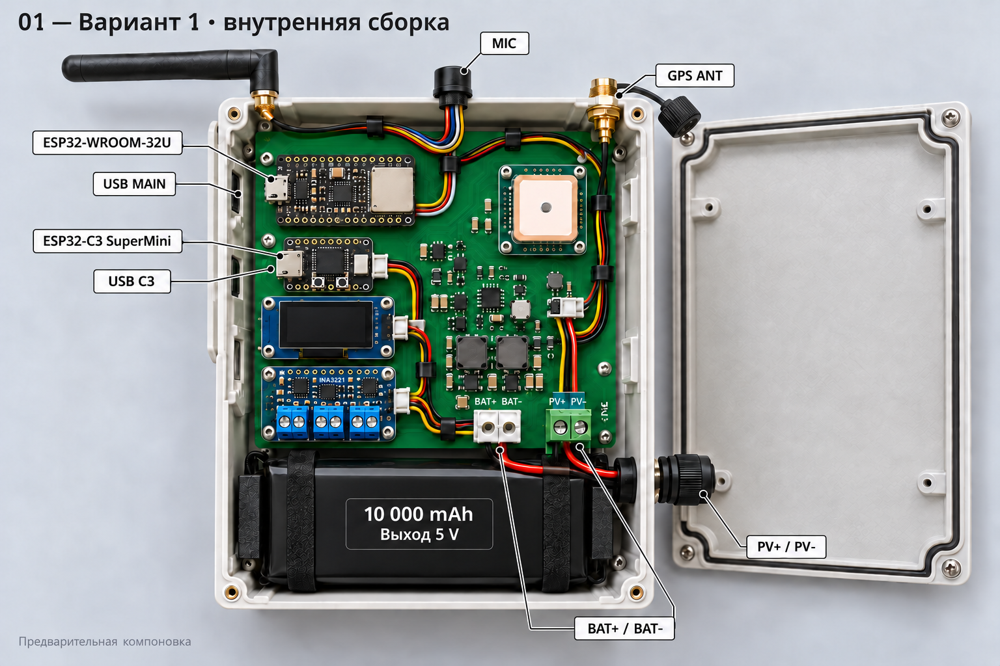
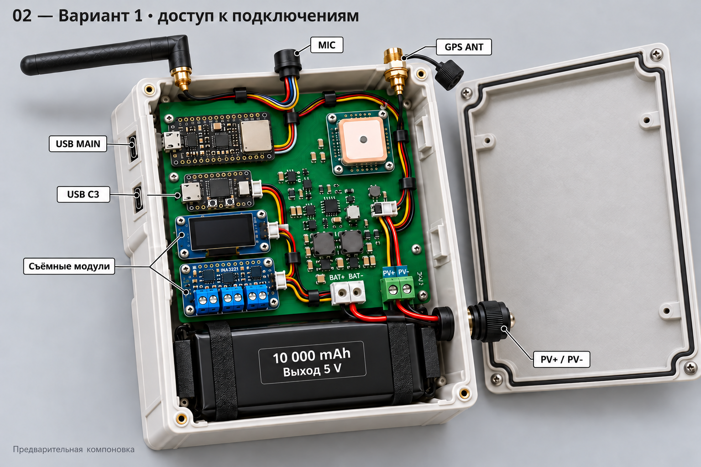
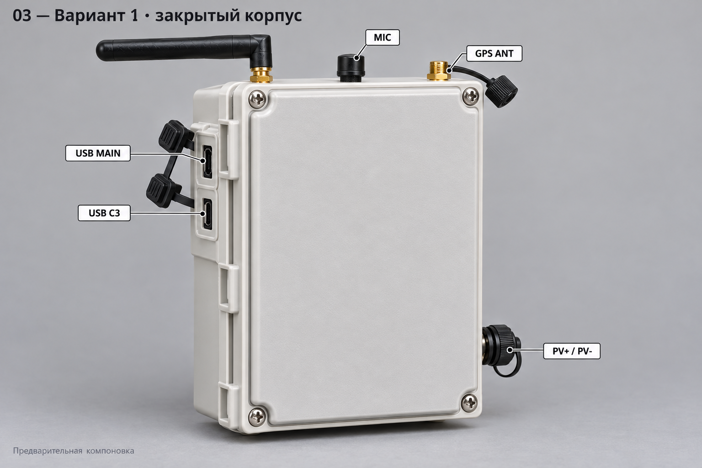

BSPRJ — два варианта устройства
Предварительные изображения компоновки. Для изготовления нужны точные размеры, схема и перечень компонентов. Проверки и разъёмы · Промпты и источники.
Вариант 1 — WROOM-32U и C3 SuperMini

01 — внутренняя сборка, батарейный узел 10 000 мА·ч, выход 5 В.

02 — сервисный ракурс и подключения.

03 — закрытый корпус и компактный микрофон.
Вариант 2 — S3 и S3-Zero, питание 12 В
Дополнительный пример монтажа
Нажмите на изображение, чтобы открыть его целиком. Изображения созданы Imagegen, не являются фотографиями изготовленных устройств. Слайды и текущая прошивка на этом этапе не менялись.